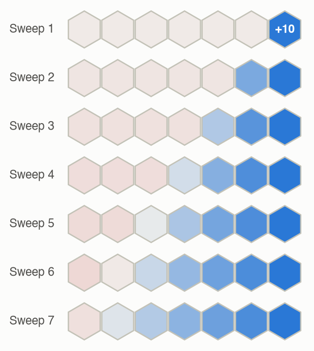

from adm.mdp import greedy, value_iteration
from adm.problems.hex_world import hex_world
mdp = hex_world()
U, _ = value_iteration(mdp.T, mdp.R, mdp.gamma)
policy, _ = greedy(mdp.T, mdp.R, mdp.gamma, U)F · Problems
Appendices
This page collects every problem used on the site, implemented in both Python (adm/problems/) and Julia (julia/src/problems/), with tests that check the two languages agree. It has two parts: the benchmark problems from Appendix F of the book, implemented from their descriptions, and the small original problems built for this site’s chapters. Each problem was added when a chapter first used it, so the five Appendix F problems that no chapter needed (2048, cart-pole, machine replacement, catch and collaborative predator-prey) are not implemented. The table shows the status of each.
| Problem | Kind | Status |
|---|---|---|
| F.1 Hex World | MDP, discrete | ✅ below |
| F.2 2048 | MDP, discrete (huge) | not implemented: no chapter uses it; the online planning chapter (Ch 9) uses Hex World and mountain car |
| F.3 Cart-Pole | MDP, continuous state | not implemented: no chapter uses it; the continuous-state chapters (Ch 8–13) use mountain car and the simple regulator |
| F.4 Mountain Car | MDP, continuous state | ✅ below |
| F.5 Simple Regulator | MDP, linear-quadratic | ✅ below |
| F.6 Aircraft Collision Avoidance | MDP, discrete | ✅ below |
| F.7 Crying Baby | POMDP | ✅ below |
| F.8 Machine Replacement | POMDP | not implemented: no chapter uses it; the POMDP chapters (Ch 20–23) use the crying baby and the fork |
| F.9 Catch | POMDP | not implemented: no chapter uses it; the POMDP chapters (Ch 20–23) use the crying baby and the fork |
| F.10–F.12 Prisoner’s Dilemma, Rock-Paper-Scissors, Traveler’s Dilemma | Simple games | ✅ below |
| F.13 Predator-Prey Hex World | Markov game | ✅ below |
| F.14 Multicaregiver Crying Baby | POMG | ✅ below |
| F.15 Collaborative Predator-Prey | Dec-POMDP | not used: Ch 27 uses the lost hiker, small enough for exact answers |
How problems are packaged
Every finite MDP comes as a DiscreteMDP with five fields:
DiscreteMDP. The arrays use the same layout as Chapter 7.
| Field | Meaning |
|---|---|
T |
Transition array: T[s, a, s′] \(= T(s' \mid s, a)\) |
R |
Reward array: R[s, a] \(= R(s, a)\) |
gamma (Python), γ (Julia) |
Discount factor |
states |
A readable label for each state index, such as a tile’s (row, col) |
actions |
A readable label for each action index, such as "NE" |
So any solver written for (T, R, γ) works on any problem. For example, here is Chapter 7’s value iteration solving Hex World:
using ADM
mdp = hex_world() # fields: T, R, γ, states, actions
# Value iteration (Ch 7): repeat Bellman backups until the values settle.
function solve(m; δ = 1e-6)
U = zeros(length(m.states))
while true
Q = [m.R[s, a] + m.γ * sum(m.T[s, a, :] .* U) for s in axes(m.R, 1), a in axes(m.R, 2)]
U′ = vec(maximum(Q, dims = 2))
maximum(abs.(U′ - U)) < δ && return U′, argmax.(eachrow(Q))
U = U′
end
end
U, policy = solve(mdp)
@assert mdp.states[argmax(U)] == (2, 9) # the +10 tile is worth the most25 states (24 tiles + terminal), 6 actions, γ = 0.9
Most valuable tile: (2, 9) with U* = 10.00Hex World
The story. A robot crosses a floor of hexagonal tiles. Three tiles are special: one pays +10, one pays +5, and one costs −10. Acting on a special tile collects its value and ends the episode. The floor is slippery, so a move sometimes veers off course, and walking into the edge of the map wastes a turn and costs 1.
It is a good first benchmark because it is small enough to solve exactly (25 states), yet it has real trade-offs. The +5 is closer than the +10 for part of the map, and the −10 sits beside a useful path.
| States | 24 tiles, plus one terminal state reached after collecting a reward |
| Actions | Move in one of 6 directions: E, NE, NW, W, SW, SE |
| Rewards | +10, +5 and −10 on three tiles; −1 for bumping into the edge |
| Discount | \(\gamma = 0.9\) |
\[ T(s' \mid s, a) = 0.7\,\big[s' = \mathrm{step}(s, a)\big] + 0.15\,\big[s' = \mathrm{step}(s, a^{-})\big] + 0.15\,\big[s' = \mathrm{step}(s, a^{+})\big] \tag{1}\]
In words. The robot goes the way it chose 70% of the time. Otherwise it veers 60° to the left or to the right, 15% each.
Term by term.
- \(\mathrm{step}(s, a)\) is the tile one step from \(s\) in direction \(a\). If that step would leave the map, \(\mathrm{step}(s, a) = s\): the robot stays put.
- \(a^{-}\) and \(a^{+}\) are the two directions next to \(a\). For \(a = \text{E}\) they are NE and SE.
- \([\cdot]\) is 1 if the condition inside is true and 0 otherwise, so the three terms add up the ways of landing on \(s'\).
- On a reward tile, every action instead moves to the terminal state with probability 1.
The reward is \(R(s, a) = r(s)\) on a reward tile. Elsewhere it is \(-1\) times the probability of bumping into the edge. For example, heading east from the top-left tile veers off the map with probability 0.15, so \(R = -0.15\).
Figure 1 shows the map and its optimal policy.
![Two hex maps side by side, each with three rows of hexagonal tiles: ten on top, six in the middle, eight on the bottom. On the left map, a +5 tile at the left of the middle row is light blue, a −10 tile in the bottom row is red, and a +10 tile at the bottom right is dark blue. On the right map, every tile is shaded by its value, from pale near the −10 to darker blue near the +10, and arrows show the best move. Tiles in the left third point toward the +5, tiles in the right two-thirds point toward the +10, and no tile next to the −10 aims at it.](f-problems_files/figure-html/fig-hex-world-output-1.png)
Straight-line Hex World
A smaller variant has seven tiles in a row, with +10 on the rightmost tile. Its only purpose is to make one thing visible: how value iteration spreads reward backward, one tile per sweep (Figure 2).

Where it’s used. Ch 9: every online planner is scored against the exact solution. Ch 13: a tabular policy and value table learned from guided tree search. optimistic_values in adm/problems/hex_world.py gives an upper bound on the optimal values (each positive reward discounted by the fewest moves to reach it), used by branch and bound and heuristic search.
Mountain car
The story. A car sits in a valley between two hills and must reach the top of the right one. Its engine is too weak to drive straight up, so it has to rock back and forth, using gravity to build speed. It is the classic example of a delayed reward: every step costs the same, and the only way to do well is to first drive away from the goal. The problem goes back to A. Moore’s 1990 PhD thesis; this discrete-action version is from S. Singh and R. Sutton, “Reinforcement Learning with Replacing Eligibility Traces,” Machine Learning, 1996.
| Part | Definition |
|---|---|
| State | position \(x \in [-1.2, 0.6]\) and speed \(v \in [-0.07, 0.07]\) |
| Actions | accelerate left (\(a = -1\)), coast (\(0\)), accelerate right (\(+1\)) |
| Transition (deterministic) | \(v' = v + 0.001a - 0.0025\cos(3x)\), then \(x' = x + v'\); both clamped to their ranges |
| Reward | \(-1\) per step; the episode ends when \(x\) reaches \(0.6\) |
| Discount | \(\gamma = 1\) on this site, so a state’s value is minus the number of steps to the goal |
from adm.problems import mountain_car as mc
s = mc.step([-0.5, 0.0], 1) # one step accelerating right from rest at x = -0.5
# mc.step also works on arrays of states: s[..., 0] is x and s[..., 1] is vusing ADM
s = mountain_car_step([-0.5, 0.0], 1) # s = [x, v]
@assert s[2] ≈ 0.001 - 0.0025cos(-1.5) && !mountain_car_goal(s)Where it’s used. Ch 8: approximate value iteration with seven kinds of value function approximation. From rest at \(x = -0.5\), a policy from a fine 201 × 201 grid takes 106 steps: right, then left, then right. Ch 9: receding-horizon forward search, with and without Ch 8’s value function beyond the horizon. Ch 10: policy search over the two-parameter rule “accelerate right if \(v + \theta_1 x + \theta_2 > 0\)” (switching_rule), scored from ten standard starts at rest (STANDARD_STARTS).
Simple regulator
The story. Keep a single number \(s\) close to zero. Each step you choose an amount \(a\) to add to it, and the world adds a little noise of its own. It is the smallest possible linear-quadratic control problem, and small enough that the value of any linear policy can be written down exactly. That makes it a clean benchmark for policy search: every method’s answer can be scored without simulation noise.
| Part | Definition |
|---|---|
| State and action | real numbers \(s\) and \(a\) |
| Transition | \(s' \sim \mathcal{N}(s + a,\ 0.1^2)\) |
| Reward | \(R(s, a) = -s^2\) (the action is free) |
| Start | \(s \sim \mathcal{N}(0.3,\ 0.1^2)\) |
| Discount, horizon | \(\gamma = 0.9\) and 10 steps on this site |
| Policy family used | \(a \sim \mathcal{N}(\theta_1 s,\ \theta_2^2)\); best: \(\theta = (-1, 0)\) |
from adm.problems import simple_regulator as sr
rng = np.random.default_rng(0)
estimate = sr.rollout_returns(np.array([-1.0, 0.0]), 1000, rng).mean() # Monte Carlo
exact = sr.exact_value([-1.0, 0.0]) # no samplingusing ADM
@assert regulator_exact_value([-1.0, 0.0]) ≈ -(0.1 + 0.01 * sum(0.9^t for t in 1:9))Where it’s used. Ch 10: every policy search method is scored by the exact value of the policy it finds. Ch 11: the exact gradient (exact_gradient, from differentiating the same recursion) scores every gradient estimator’s bias and variance. Ch 12: the policy’s log_policy and policy_kl drive TRPO and PPO, and exact values score every update rule. Ch 13: actor-critic with a quadratic critic, and the deterministic policy gradient.
Aircraft collision avoidance
The story. Our aircraft flies head on toward an intruder and will meet it in 40 seconds. Each second, a collision avoidance system can advise the pilot to climb, to descend, or nothing. Gusts nudge the vertical rate, and the pilot can change it only gradually. The system must avoid passing within 50 m of the intruder vertically, without issuing needless or frequently changing advisories. It is a highly simplified version of the problem behind airborne collision avoidance systems.
| Part | Definition |
|---|---|
| State | altitude relative to the intruder \(h\) (m), vertical rate \(\dot h\) (m/s), previous advisory, time to collision \(t_{\text{col}}\) (s) |
| Actions | no advisory; descend at 5 m/s; climb at 5 m/s |
| Transition, each second | \(h \leftarrow h + \dot h\), \(\ \dot h \leftarrow \dot h + \ddot h + \nu\), \(\ t_{\text{col}} \leftarrow t_{\text{col}} - 1\) |
| Pilot response \(\ddot h\) | toward the advised rate, at most 1 m/s² (so \(\ddot h = \operatorname{clip}(\text{rate} - \dot h, -1, 1)\)); 0 with no advisory |
| Gusts \(\nu\) | −2, 0, +2 m/s with probabilities ¼, ½, ¼ |
| Costs | 1 if \(|h| < 50\) m at \(t_{\text{col}} = 0\) (collision); 0.01 for each change of advisory |
| Start (this site) | \(t_{\text{col}} = 40\), no advisory; \(h\) and \(\dot h\) uniform on the integers in ±200 m and ±10 m/s |
Two choices are this site’s. The book’s formula for \(\ddot h\) reads \(a/\Delta t\) when the advised rate is within reach; we take the step that reaches the advised rate, \((\text{rate} - \dot h)/\Delta t\). And starts are integers: then \(h\) and \(\dot h\) stay integers forever (every change is a whole number), so the problem is an exact finite MDP on an integer lattice. optimal_policy solves it by backward induction on that lattice in about 0.1 s, with no interpolation. That gives exact answers for every metric, which Ch 14 uses to check its sampling methods. The lattice is clamped at ±500 m and ±30 m/s; a lattice of ±800 m and ±50 m/s changes the collision probabilities by less than \(10^{-10}\) (tested).
The Model settings (noise, p_noise, accel_limit, compliance, the two costs) describe variants for robustness checks. For instance, compliance = 0.8 is a pilot who follows each advisory only 80% of the time. simple_policy is a threshold policy for comparison: climb or descend away from the intruder when it is within 50 m vertically and less than 30 s away.
from adm.problems import collision_avoidance as ca
m = ca.Model()
policy, cost = ca.optimal_policy(m) # policy[t][a_prev, i_h, i_hdot]
p_collision = ca.start_average(m, ca.evaluate(m, policy)) # exact, by policy evaluation
p_simple = ca.start_average(m, ca.evaluate(m, ca.simple_policy(m)))collision probability: optimal 6.42e-04, simple 0.072using ADM
m = CAModel()
policy, cost = ca_optimal_policy(m) # policy[t][a_prev, i_h, i_ḣ]
p_collision = ca_start_average(m, ca_evaluate(m, policy))
p_simple = ca_start_average(m, ca_evaluate(m, ca_simple_policy(m)))
@assert 6e-4 < p_collision < 7e-4 && 0.07 < p_simple < 0.075Where it’s used. Ch 14: exact evaluation of collision risk and advisory changes, Monte Carlo and importance sampling checked against it, robustness to pilot compliance and gusts, robust dynamic programming, trade-off curves, and the most likely failure found by an adversary.
Crying baby
The story. A caregiver can’t tell whether a baby is hungry; it only hears whether the baby cries. Each hour it can feed the baby (effective but costly), sing to it (cheap, and more informative about hunger), or ignore it. It is the standard small POMDP: two hidden states, three actions and two observations. It is small enough to solve exactly and to draw every belief on a single axis, \(P(\text{hungry})\).
| Part | Definition |
|---|---|
| States | sated, hungry |
| Actions | feed, sing, ignore |
| Observations | crying, quiet |
| Transitions | feeding always sates; otherwise a sated baby becomes hungry w.p. 0.1, and a hungry one stays hungry |
| Observations | \(P(\text{cry} \mid \text{hungry})\) = 0.8 (feed, ignore), 0.9 (sing); \(P(\text{cry} \mid \text{sated})\) = 0.1 (feed, ignore), 0 (sing); both depend on the state after the action |
| Rewards | −10 while hungry, −5 more to feed, −0.5 more to sing; discount 0.9 |
from adm.problems.crying_baby import belief_update, crying_baby
pomdp = crying_baby() # T[s, a, s2], R[s, a], O[a, s2, o]; 0 = sated / feed / crying
b = belief_update(pomdp, np.array([0.8, 0.2]), 2, 0) # ignore, then hear cryingusing ADM
p = crying_baby() # 1-based: 1 = sated / feed / crying
b = update_discrete([0.8, 0.2], p.T, p.O, 3, 1) # ignore, then hear crying
@assert b[2] ≈ 0.224 / 0.296Where it’s used. Ch 20: conditional plans, alpha vectors, pruning and exact value iteration. The long-horizon policy ignores the baby until \(P(\text{hungry})\) reaches about 0.28, then feeds; with the problem as defined here, singing is never optimal. Ch 21: every offline bound is compared with the exact value. Ch 22: forward search, branch and bound, sparse sampling, determinized search, Monte Carlo tree search and gap heuristic search, all scored against the exact solution. Ch 23: a 2-node controller (“feed on crying, but not twice in a row”) is exactly optimal; policy iteration and gradient ascent find it.
Simple games
The story. Three one-round games for two agents, who choose at the same time. In the prisoner’s dilemma (F.10), each prisoner can stay silent (cooperate) or blame the other (defect); rewards are minus the years served. In rock-paper-scissors (F.11), the winner gets 1 and the loser −1. In the traveler’s dilemma (F.12; K. Basu, 1994), two travelers claim between $2 and $100 for identical lost suitcases; equal claims are paid, otherwise both are paid the lower claim, plus $2 for the lower claimant and minus $2 for the higher. All three store \(R[i, a^1, a^2]\), agent \(i\)’s reward, with discount 0.9 when repeated.
| Game | Actions | Rewards (agent 1, agent 2) |
|---|---|---|
| Prisoner’s dilemma | cooperate, defect | (C, C) −1, −1; (C, D) −4, 0; (D, C) 0, −4; (D, D) −3, −3 |
| Rock-paper-scissors | rock, paper, scissors | winner 1, loser −1, draw 0 |
| Traveler’s dilemma | claims $2–$100 (99 actions) | equal: both get the claim; else lower + 2 and lower − 2 |
from adm.problems.simple_games import prisoners_dilemma, rock_paper_scissors, travelers_dilemma
game = travelers_dilemma() # R[i, a1, a2]; action 0 = $2
print(game.R[:, 97, 98]) # claims $99 and $100: [101. 97.][101. 97.]using ADM
g = travelers_dilemma() # R[i, a1, a2]; action 1 = $2
@assert g.R[:, 98, 99] == [101.0, 97.0] # claims $99 and $100Where it’s used. Ch 24: defecting is a dominant strategy in the prisoner’s dilemma; rock-paper-scissors has only a mixed Nash equilibrium, and iterated best response cycles in it; in the traveler’s dilemma best responses unravel to $2, while a hierarchical softmax model predicts claims near $90.
Predator-prey hex world
The story. A predator chases a prey across a small map of hexagonal tiles. Both move at once, as in Hex World: in the chosen direction with probability 0.7, or veering to a neighboring direction with probability 0.15 each; a move off the map stays put. When they share a tile, the prey is caught and reappears on a random tile. The predator pays 1 per move and gains 1 per capture; the prey loses 100 when caught. The map is the 12-tile one of the book’s figure F.16, transcribed as three rows (row 1: columns 0–2; row 2: columns 0, 2, 4, 5; row 3: columns 0–4, odd rows shifted right). The predator starts at (1, 2) and the prey at (3, 2).
| Part | Definition |
|---|---|
| Agents | predator (agent 1), prey (agent 2) |
| States | (predator’s tile, prey’s tile): 144 pairs |
| Actions | six hex directions each: E, NE, NW, W, SW, SE |
| Rewards | predator −1 per step, +1 on capture; prey −100 on capture |
| Discount | 0.9 |
from adm.problems.markov_games import predator_prey
game = predator_prey() # T[s, a1, a2, s2], R[i, s, a1, a2]; s = pred * 12 + preyusing ADM
g = predator_prey() # 1-based; s = (pred - 1) * 12 + prey
@assert size(g.T) == (144, 6, 6, 144) && all(sum(g.T; dims = 4) .≈ 1)Where it’s used. Ch 25: a predator’s best response to a random prey and the prey’s reply; iterated best response cycles without settling; fictitious play’s exploitability falls from about 67 after 1,000 steps to about 19 after 50,000.
Multicaregiver crying baby
The story. Two caregivers look after one baby. Each hour, each can feed, sing to or ignore it. Either caregiver feeding sates the baby; otherwise a hungry baby stays hungry and a sated one stays sated with probability 0.5. Both hear the same thing: a hungry baby cries 90% of the time, a sated one never. Both pay 10 per hour while the baby is hungry; feeding costs caregiver 1 an extra 2.5 and caregiver 2 an extra 5; singing costs 0.5 and 0.25. It’s implemented exactly as Appendix F.14 defines it. Two consequences of that definition: singing is no more informative than ignoring, and there is no discount for both doing the same thing (the book’s Example 26.1 describes a variant where the cost is halved).
| Part | Definition |
|---|---|
| States | sated, hungry |
| Actions (each) | feed, sing, ignore |
| Observations (each) | crying, quiet; always the same for both |
| Transitions | a feed by either sates; else hungry stays hungry, sated stays sated w.p. 0.5 |
| Rewards (each) | −10 while hungry; feeding −2.5 (caregiver 1) or −5 (caregiver 2); singing −0.5 or −0.25 |
| Discount | 0.9 |
from adm.problems.multicaregiver import multicaregiver
game = multicaregiver() # T[s, a1, a2, s2], O[a1, a2, s2, o1, o2], R[i, s, a1, a2]using ADM
g = multicaregiver() # 1-based: 1 = sated / feed / crying
@assert g.O[3, 3, 2, 1, 1] == 0.9 && g.R[2, 2, 3, 1] == -15.0Where it’s used. Ch 26: evaluation of joint conditional plans and controllers; the two-step game over plans (27 × 27) and dynamic programming with pruning (32 of 48 four-step candidates survive); equilibria where one caregiver feeds and the other free-rides.
Problems made for this site
The chapters also use small original problems, built to make one idea easy to see. The ones reused across pages get a full entry here, in both languages; the rest are listed in Table 21.
Morning commute
The story. Five yes/no facts about a morning: was there a storm, roadwork, a traffic jam; were you late; did the radio warn of a storm. Storms and roadwork cause jams, jams make you late, and storms trigger radio alerts. It is small enough to check every answer by hand, yet it contains all three d-separation patterns: a chain, a fork and a collider.
| Variable | Parents | P(yes | parents) |
|---|---|---|
| Storm \(S\) | — | 0.1 |
| Roadwork \(R\) | — | 0.2 |
| Traffic jam \(J\) | \(S, R\) | 0.1 (neither), 0.6 (roadwork only), 0.7 (storm only), 0.9 (both) |
| Late \(L\) | \(J\) | 0.05 (no jam), 0.5 (jam) |
| Radio alert \(A\) | \(S\) | 0.02 (no storm), 0.95 (storm) |
from adm.problems.commute import COMMUTE # a BayesNet: card, parents, cpt
p_jam_given_storm_only = COMMUTE.cpt["J"][1, 0, 1] # axes: S, R, then J; value 1 = yesusing ADM
commute = commute_network() # a BayesNet: card, parents, cpt
@assert commute.cpt[:J][2, 1, 2] == 0.7 # axes: S, R, then J; value 2 = yes (1-based)Where it’s used. Ch 2: the chain rule, parameter counts, explaining away, d-separation. Ch 3: every inference method answers \(P(\text{storm} \mid \text{late}, \text{alert}) = 0.935\). Ch 4: its tables are learned back from simulated mornings, including with the storm value missing (EM). Ch 5: its graph is learned back from data, and the radio alert’s near-copy of the storm shows why small samples can mislead. Ch 6: extended into a decision network.
Commute decision
The story. The morning commute becomes a choice: leave on time, leave 30 minutes early, or stay home and work remotely. Leaving early makes lateness unlikely even in a jam, and staying home rules it out, but both have a cost of their own. It is the smallest decision network with a real trade-off, and its observations have clearly different values of information: the traffic app, which shows the jam, is worth over five times as much as the radio.
| Decision \(D\) | P(late | no jam) | P(late | jam) | Utility if on time | Utility if late |
|---|---|---|---|---|
| Leave on time | 0.05 | 0.5 | 0 | −10 |
| Leave early | 0 | 0.1 | −2 | −12 |
| Stay home | 0 | 0 | −6 | −16 (can’t happen) |
from adm.problems.commute import ACTIONS, COMMUTE_DECISION, COMMUTE_UTILITY
# COMMUTE_DECISION is a BayesNet whose decision D has no parents and a placeholder table;
# COMMUTE_UTILITY[d, l] has axes D (0 = on time, 1 = early, 2 = home) and L (1 = late)using ADM
decision = commute_decision_network() # D: 1 = on time, 2 = early, 3 = home
@assert decision.card[:D] == 3 && decision.parents[:L] == (:J, :D)
@assert decision.cpt[:L][2, 2, 2] == 0.1 # P(late | jam, leave early)
@assert COMMUTE_UTILITY[2, 2] == -12 # leave early and still lateWhere it’s used. Ch 6: maximum expected utility, and the value of the radio and the traffic app.
Coffee machine
The story. An espresso machine is fine, has scale buildup, or has a worn pump. You can’t see which, but you can notice three symptoms: slow flow, a loud noise, and weak-tasting coffee. Each symptom depends only on the machine’s condition, which makes this a naive Bayes model. It shows how a rare cause can become the most likely one once the evidence fits it well.
| Condition | Prior | Slow flow | Loud noise | Weak taste |
|---|---|---|---|---|
| ok | 0.80 | 0.05 | 0.10 | 0.10 |
| scale buildup | 0.15 | 0.70 | 0.20 | 0.60 |
| worn pump | 0.05 | 0.60 | 0.80 | 0.30 |
from adm.problems.coffee import COFFEE, LIKELIHOODS, PRIOR # BayesNet, plus the naive Bayes arrays
# LIKELIHOODS[i][c, o] = P(symptom i = o | condition c); o = 1 means presentusing ADM
coffee = coffee_network() # C has 3 values; each symptom is binary
@assert coffee.card[:C] == 3 && sum(COFFEE_PRIOR) ≈ 1
@assert coffee.cpt[:N][3, 2] == 0.8 # P(loud noise | worn pump)Where it’s used. Ch 3: naive Bayes inference.
Commute times
The story. Morning and evening commute times, in minutes, are jointly Gaussian: morning \(\mathcal{N}(35, 8^2)\) and evening \(\mathcal{N}(40, 10^2)\), with correlation \(\rho = 0.6\), because a bad traffic day tends to be bad all day. It is the smallest example of conditioning a Gaussian: one observation shifts the other’s mean and shrinks its spread.
| Morning | Evening | |
|---|---|---|
| Mean (min) | 35 | 40 |
| Standard deviation (min) | 8 | 10 |
| Covariance matrix \(\boldsymbol\Sigma\) | \(\begin{pmatrix} 64 & 48 \\ 48 & 100 \end{pmatrix}\) | (\(48 = 0.6 \times 8 \times 10\)) |
from adm.problems.commute import COMMUTE_TIMES_COV, COMMUTE_TIMES_MEAN # index 0 = morning, 1 = eveningusing ADM
@assert COMMUTE_TIMES_MEAN == [35.0, 40.0] # 1 = morning, 2 = evening
@assert COMMUTE_TIMES_COV[1, 2] == 0.6 * 8 * 10Where it’s used. Ch 3: Gaussian conditioning.
Mountain trail
The story. A hiker is somewhere on a six-position trail, from the trailhead (0) to the summit (5). Resting at the trailhead earns a small, sure reward: a snack from the car. The view at the summit is worth twenty times as much, but the climb is unreliable. Each attempt to climb gains ground only 35% of the time, and occasionally slips back. It is a small test of exploration. An agent that grabs the nearby reward and trusts its early experience never learns that the long climb pays. The structure follows the RiverSwim benchmark (A. L. Strehl and M. L. Littman, J. Comput. Syst. Sci., 2008), with this site’s own numbers.
| Part | Definition |
|---|---|
| States | positions 0 (trailhead) to 5 (summit) |
| back | down one position, surely; at the trailhead, rest (reward 0.05) |
| climb | up one w.p. 0.35, stay w.p. 0.6, slip down one w.p. 0.05; at the summit, stay (w.p. 0.95) and enjoy the view (reward 1) |
| Discount | 0.95 |
| Optimal policy | climb everywhere: worth 8.13 from the trailhead against 1.0 for resting forever; 0.857 reward per step in the long run |
from adm.problems.trail import trail
mdp = trail() # actions: 0 = back, 1 = climbusing ADM
mdp = trail() # 1-based: positions 1..6; actions 1 = back, 2 = climb
@assert mdp.T[1, 2, 2] ≈ 0.35 && mdp.R[6, 2] == 1.0Where it’s used. Ch 16: ε-greedy exploration on a maximum likelihood model rarely learns to climb; R-MAX (with a well-chosen threshold) and posterior sampling do. Ch 17: Q-learning with ε-greedy exploration gets stuck too; optimistic initial values and potential-based shaping fix it, while a naive “+5 per step up” bonus makes walking back down optimal.
The park
The story. Walkers cross an 8 × 8 park from its left edge to the gate in the top-right corner. Paths are pleasant, grass is slower, and mud is miserable; the ground is slippery, so a step sometimes goes sideways or back. The reward is a weighted sum of terrain features, which makes the park a clean test for imitation learning. An expert’s walks can be copied cell by cell, or explained by the weights they imply. Two layouts share the terrain types, so a learned reward can be tried in a park it has never seen.
| Part | Definition |
|---|---|
| States | 64 cells (row-major) and an end state; the gate is at row 0, column 7 |
| Actions and moves | N, E, S, W; intended w.p. 0.8, else one of the other three (0.2/3 each); walls: stay put |
| Features \(\beta(s, a)\) | one-hot terrain of the current cell: path, grass, mud, gate |
| True reward | \(\phi = (-1, -2, -6, 10)\): \(R(s, a) = \phi^\top\beta(s, a)\); from the gate, any action ends the walk |
| Discount, starts | 0.95; demonstrations and evaluations start uniformly on the left edge (or every cell, for IRL) |
| Layouts | A (demonstrations) and B (transfer test); same terrain types, different arrangement |
from adm.problems.park import left_edge_starts, park
mdp, beta = park("A") # beta[s, a, k]: path, grass, mud, gate
starts = left_edge_starts("A")using ADM
mdp, β = park("A") # 1-based: cell (r, c) is index 8r + c + 1
@assert mdp.R ≈ dropdims(sum(β .* reshape(PARK_PHI_TRUE, 1, 1, :); dims = 3); dims = 3)Where it’s used. Ch 18: behavioral cloning, DAgger and SMILe, maximum margin and maximum entropy inverse reinforcement learning, and the transfer of a learned reward from layout A to layout B.
The fork
The story. A hiker reaches a fork and doesn’t know which trail leads home. Taking the right trail is worth 10; the wrong one costs 50; either way a new hike then starts at a fresh fork. A passerby can be asked (cost 1), and answers correctly 85% of the time; or the hiker can wait, which is free and teaches nothing. The problem is built to show when information has to be paid for: methods that treat information as free (QMDP) conclude that waiting is best, forever. Its structure follows the classic tiger problem (L. P. Kaelbling, M. L. Littman and A. R. Cassandra, Artificial Intelligence, 1998), with the free wait action added.
| Part | Definition |
|---|---|
| States | home is left, home is right |
| Actions | wait (0), ask (−1), go left, go right |
| Rewards | going: +10 on the right trail, −50 on the wrong one |
| Transitions | waiting and asking keep the state; going starts a new hike, either trail equally likely |
| Observations | “left” or “right”: after asking, correct w.p. 0.85; otherwise 50–50 noise |
| Discount | 0.95 |
from adm.problems.fork import fork
pomdp = fork() # T[s, a, s2], R[s, a], O[a, s2, o]using ADM
p = fork() # 1-based: actions 1 wait, 2 ask, 3 go left, 4 go right
@assert p.O[2, 1, 1] == 0.85 && p.R[1, 3] == 10.0Where it’s used. Ch 21: QMDP and the fast informed bound both wait forever; point-based value iteration asks until fairly sure, and its lower bound meets a triangulated upper bound at about 27.11. Ch 22: a one-step lookahead on QMDP waits forever, but a two-step forward search on the same values asks, and acts exactly like the point-based policy; Monte Carlo tree search learns to ask when its exploration constant matches the reward scale. Ch 23: no controller with fewer than 4 nodes beats waiting; a 5-node controller that counts the answers is optimal; gradient ascent from random starts always ends up waiting.
The intersection
The story. Two drivers reach an empty intersection at the same moment, and each chooses to go or stop. If one goes and the other stops, the one who goes saves time (+3) and the other gets 0. If both go they nearly crash (−10 each); if both stop they both waste time (−1 each). It is a game of chicken: there’s no dominant strategy, there are two pure Nash equilibria that each favor one driver, and a mixed one that is bad for both. A traffic light, a correlated equilibrium, gives each driver 1.5.
| Driver 1 \ Driver 2 | go | stop |
|---|---|---|
| go | −10, −10 | 3, 0 |
| stop | 0, 3 | −1, −1 |
from adm.problems.simple_games import intersection
game = intersection() # R[i, a1, a2]; 0 = go, 1 = stopusing ADM
g = intersection() # 1-based: 1 = go, 2 = stop
@assert g.R[1, 1, 2] == 3.0 && g.R[2, 1, 2] == 0.0Where it’s used. Ch 24: three Nash equilibria (the mixed one, going with probability 2/7, is worth −5/7 to each); the traffic light as a correlated equilibrium; fictitious play from identical starting counts moves in lockstep, matching the mixed equilibrium’s frequencies while earning −3.57 per round.
The lake
The story. Two fishing boats share a lake whose fish stock is low, medium or high. Each day, each boat fishes lightly or heavily. Heavy fishing catches more today but depletes the stock, and a depleted lake pays both boats less for years: a sequential tragedy of the commons. It has exactly two deterministic stationary Nash equilibria: both fish lightly unless the stock is high (which is also what a single owner of both boats would do), or both always fish heavily.
| Part | Definition |
|---|---|
| States | stock low, medium, high |
| Actions | light, heavy (each boat) |
| Catch (per boat) | light 1, 2, 3; heavy 2, 3.5, 5 (at low, medium, high) |
| Transitions | no heavy boat: up w.p. 0.7, else same; one: up 0.2, same 0.5, down 0.3; two: down 0.7, same 0.3 |
| Discount | 0.9 |
from adm.problems.markov_games import lake
game = lake() # 0 = low / lightusing ADM
g = lake() # 1-based: 1 = low / light
@assert g.R[1, 3, 2, 1] == 5.0 && g.T[3, 2, 2, 2] == 0.7Where it’s used. Ch 25: policy evaluation, best responses, both equilibria and a third, mixed one found by nonlinear programming; fictitious play reaches either equilibrium; Nash Q-learning needs steady exploration.
The lost hiker
The story. A hiker is lost in the left or right valley. Two rescuers at separate lookouts can each listen for a radio report (cost 1; right 80% of the time, and private to that rescuer), search the left valley or search the right one. Carrying the hiker out takes both: both searching the right valley earns 20, one alone earns 5, and each wrong search costs 10. Any search ends the episode, and a new hiker is lost in a random valley. The team shares one reward: a Dec-POMDP. The structure is similar to the decentralized tiger problem of the Dec-POMDP literature, with this site’s own story and numbers.
| Part | Definition |
|---|---|
| States | hiker in the left or right valley |
| Actions (each) | listen, search left, search right |
| Observations (each) | “left” or “right”: after both listen, right w.p. 0.8, independently; otherwise 50–50 |
| Shared reward | both in the right valley +20; one +5; each wrong search −10; each listener −1 |
| Transitions | listening keeps the valley; any search draws a new one at random |
| Discount | 0.9 |
from adm.problems.lost_hiker import lost_hiker
game = lost_hiker() # a POMG with identical reward rows; 0 = listen / leftusing ADM
g = lost_hiker() # 1-based: 1 = listen / left
@assert g.R[1, 1, 2, 2] == 20.0 && g.R[1, 1, 1, 1] == -2.0 && g.R == g.R[[2, 1], :, :, :]Where it’s used. Ch 27: the exact team optimum (7.36 over two or three steps) against the value with pooled reports; iterated best response and memory-bounded search stopping short; a 3-node controller worth 38.74 that nonlinear programming from random starts misses.
Other problems on this site
| Problem | Kind | Page | Code |
|---|---|---|---|
| Rover grid | MDP, 4×5 grid with slip | Ch 7 | Python: adm/problems/gridworld.py |
| Delivery drone | MDP, 2 states | Ch 7 | on the page |
| Factory machine | MDP, 2 states (solved problem) | Ch 7 | on the page |
| Headline test | Bernoulli bandit, 3 arms (click rates 0.35, 0.50, 0.55) | Ch 15 | on the page; strategies in adm/bandits.py |
| Towpath | MDP, 4×8 grid beside a canal (a cliff walk) | Ch 17 | on the page |
| Tram loop | Discrete filter, 12 states | Ch 19 | on the page |
| Kayak | Linear-Gaussian, 1D | Ch 19 | on the page |
| Drifting buoy | Linear-Gaussian, 4D | Ch 19 | on the page |
| Range-only rover | Nonlinear, particle filter | Ch 19 | on the page |